<nav class="navbar  navbar-expand-lg sticky-top bg-dark px-6" id="navigation">
  <div class="container-fluid d-flex justify-content-center align-items-center">

    <div class="d-flex ">
      <h2 class="text-white">
        
        Tim Le Large
      </h2>

      <button aria-controls="sections" aria-expanded="false" aria-label="Toggle navigation"
              class="navbar-toggler btn"
              data-bs-target="#sections" data-bs-toggle="collapse" id="nav-toggler" type="button">

        <h2>
          <fa-icon [icon]="faBars" class="navbar-toggler-icon text-white bg-opacity-100"></fa-icon>
        </h2>
      </button>
    </div>


    <div class="collapse navbar-collapse  flex-d justify-content-end " id="sections">


      <ul class="navbar-nav " id="section-list">

        <li class="nav-item btn" data-menuanchor="home">
          <a class="nav-link text-white" href="/#home">
            <h3>Home</h3>
          </a>
        </li>
        <li class="nav-item btn" data-menuanchor="profile">
          <a class="nav-link text-white" href="/#profile">
            <h3>Profile</h3>
          </a>
        </li>
        <li class="nav-item btn" data-menuanchor="projects">
          <a class="nav-link text-white" href="/#projects">
            <h3>Projects</h3>
          </a>
        </li>
        <li class="nav-item btn" data-menuanchor="contact">
          <a class="nav-link text-white" href="/#contact">
            <h3>Contact</h3>
          </a>
        </li>


      </ul>


    </div>
  </div>


</nav>
